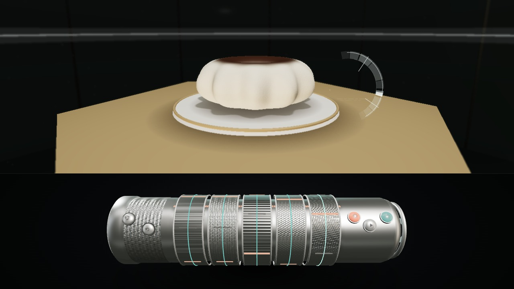
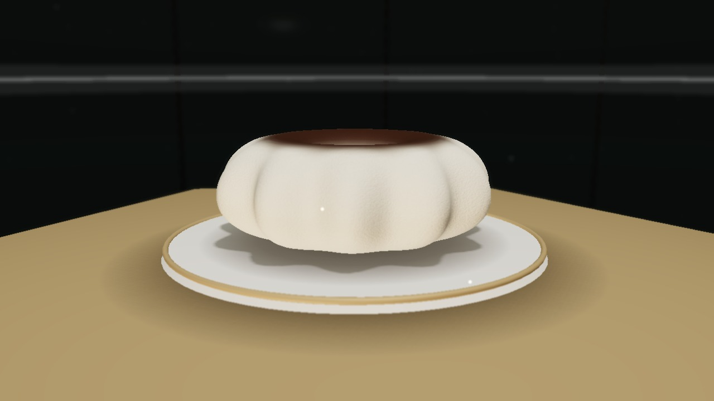
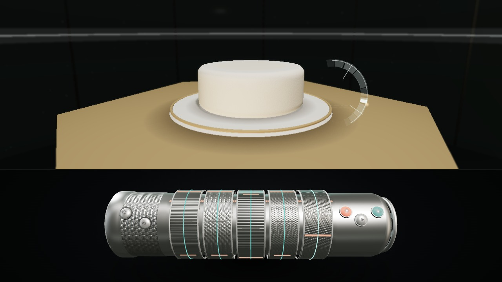
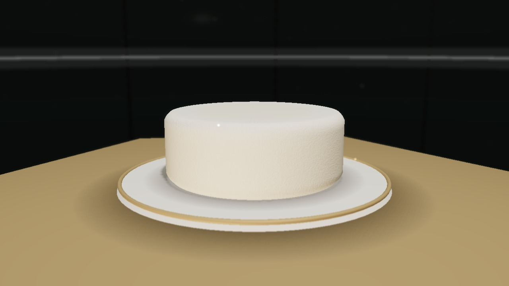
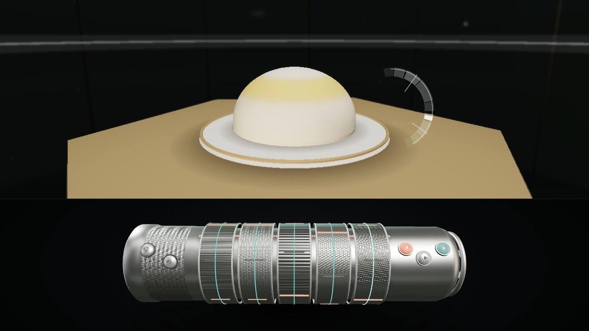
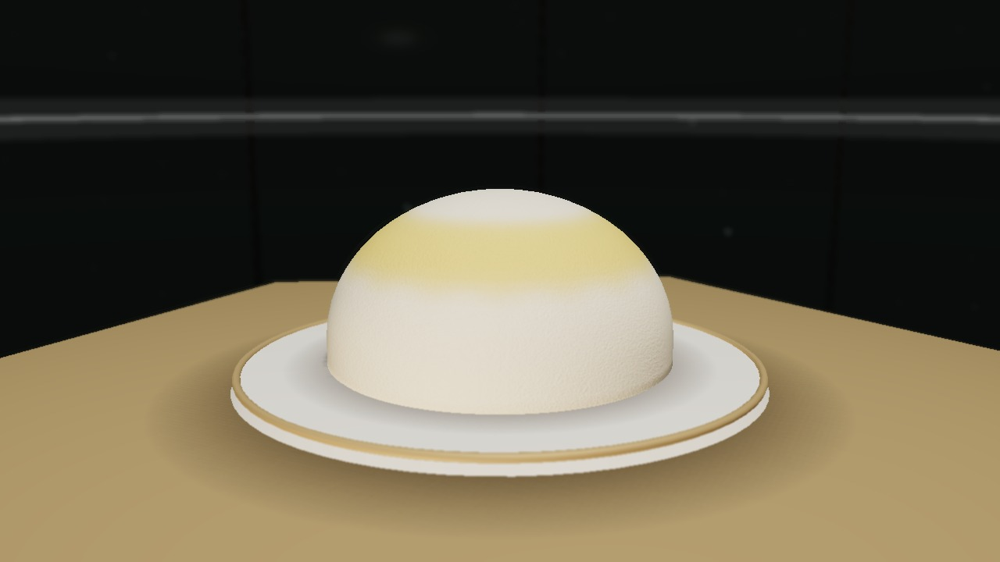
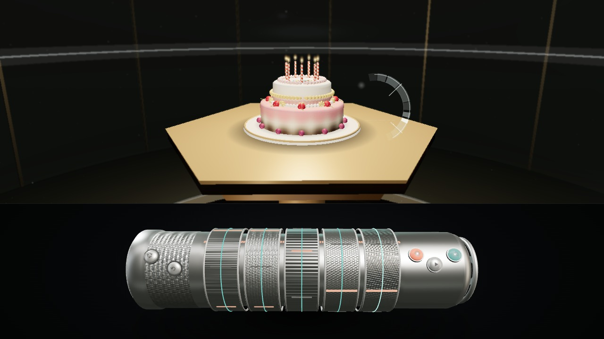
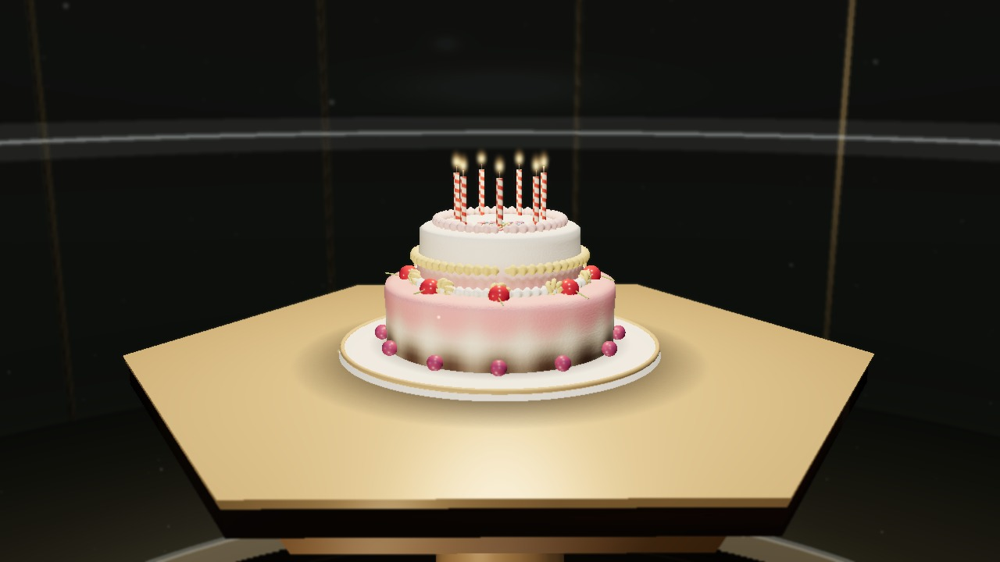

Grounded on the gold-rimmed ivory porcelain stand over rich honey-walnut woodgrain so all 12 flutes, dark chocolate glaze, and under-cake contact shadow read effortlessly. Use the 10 prompts directly beneath this cake to generate 10 different eras, people, and fluted ring cakes.


Classic cylindrical birthday sponge with crisp vertical walls, warm porcelain pedestal rim, and pale optical ")" reticle off to the right side of the cake. Below are 10 prompts across different people, times, and single-tier drum cakes.


Hemispherical domed sponge glazed warm lemon-gold on the grounded porcelain stand with unmistakable tabletop woodgrain and contact shadow beneath. Below are 10 prompts across different people, times, and domed celebration cakes.


Full two-tier rose, chocolate-foot, and white-crown birthday cake with 360° gold/rose/white piping, 10 rosettes, 8 cherries, 12 foot berries clearly visible beneath the lower tier, 7 burning candles, and the 3 warmly illuminated children.